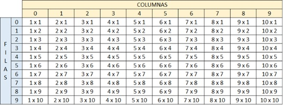

1. Crear un vector de tipo Entero con 5 posiciones, llenarlo con información solicitada al usuario. Después de recoger toda la información, se requiere imprimir el índice de cada posición en el arreglo con su valor de la siguiente manera:
[0] = 55
[1] = 99
[2] = 11
[3] = 56
[4] = 69
package com.mycompany.taller4;
import java.util.Scanner;
/**
*
* @author user
*/
public class Taller4_P1 {
public static void main(String[] args) {
Scanner input = new Scanner(System.in);
int datos[];
datos = new int[5];
for (int i = 0; i <= 4; i++) {
System.out.println("Digite los valores");
int valores = input.nextInt();
datos[i] = valores;
}
for (int i = 0; i <= 4; i++) {
System.out.println("["+i+"] = "+datos[i]);
}
}
}
2. Crear un arreglo de números enteros de 20 posiciones, el cual, debe ser llenado con números aleatorios entre 1 y 100; después de haber llenado dicho arreglo, se debe volver a recorrer utilizando un ciclo diferente al que se usó para llenarse e imprimir los números pares e impares. Ejemplo
Números pares: 2, 4, 6, 8, 10
Números impares: 1, 3, 5, 7, 9,
package com.mycompany.taller4;
import java.util.Random;
/**
*
* @author user
*/
public class Taller4_P2 {
public static void main(String[] args) {
int datos[];
datos = new int[20];
Random Aleatorio = new Random();
for (int i = 0; i <= 19; i++) {
datos[i] = 1 + Aleatorio.nextInt(99);
}
int j = 0;
System.out.print("Pares ");
while (j<20){
if (datos[j] % 2 == 0) {
System.out.print(datos[j]+ " ");
}
j++;
}
int k= 0;
System.out.println(" ");
System.out.print("Impares ");
while (k<20){
if (datos[k] % 2 != 0) {
System.out.print(datos[k]+ " ");
}
k++;
}
}
}
3. Imprimir los números primos del 1 al 1000, el resultado debe ser buscado de forma matemática.
package com.mycompany.taller4;
/**
*
* @author user
*/
public class Taller4_P3 {
public static void main(String[] args) {
int datos[];
datos = new int[1000];
int contador = 0;
for (int i = 0; i <= 999; i++) {
datos[i] = i + 1;
}
for (int i = 0; i < 1000; i++) {
for (int j = 1; j <= i; j++) {
if (datos[i - 1] % j == 0) {
contador+=1;
}
}
if (contador == 2) {
System.out.println(datos[i - 1]);
}
contador = 0;
}
}
}
4. Dada la siguiente matriz bidimensional, el cual debe de quemar en el código.
01 02 03 04 05
06 07 08 09 10
11 12 13 14 15
16 17 18 19 20
Utilizando el conocimiento adquirido, a excepción de hacerlo de forma manual, imprima la siguiente matriz bidimensional.
01 02 03 04 05
10 09 08 07 06
11 12 13 14 15
20 19 18 17 16
package com.mycompany.taller4;
/**
*
* @author user
*/
public class Taller4_P4 {
public static void main(String[] args) {
String matriz[][];
matriz = new String[4][5];
matriz[0][0] = "1";
matriz[0][1] = "2";
matriz[0][2] = "3";
matriz[0][3] = "4";
matriz[0][4] = "5";
matriz[1][0] = "6";
matriz[1][1] = "7";
matriz[1][2] = "8";
matriz[1][3] = "9";
matriz[1][4] = "10";
matriz[2][0] = "11";
matriz[2][1] = "12";
matriz[2][2] = "13";
matriz[2][3] = "14";
matriz[2][4] = "15";
matriz[3][0] = "16";
matriz[3][1] = "17";
matriz[3][2] = "18";
matriz[3][3] = "19";
matriz[3][4] = "20";
for (int fila = 0; fila < 4; fila++) {
for (int columna = 0; columna < 5; columna++) {
System.out.print(matriz[fila][columna] + " ");
}
System.out.println(" ");
}
for (int fila = 0; fila < 4; fila++) {
if (fila == 0 || fila == 2) {
for (int columna = 0; columna < 5; columna++) {
System.out.print(matriz[fila][columna] + " ");
}
System.out.println(" ");
} else {
for (int columna = 4; columna >= 0; columna--) {
System.out.print(matriz[fila][columna] + " ");
}
System.out.println(" ");
}
}
}
}
5. Se debe de imprimir el siguiente cuadro.

package com.mycompany.taller4;
import java.util.Scanner;
/**
*
* @author user
*/
public class Taller4_P5 {
public static void main(String[] args) {
Scanner input = new Scanner (System.in);
int matriz[][];
matriz = new int[10][10];
int resultados[][];
resultados = new int[10][10];
for (int fila = 1; fila < matriz.length; fila++) {
if (fila != matriz.length) {
for (int columna = 1; columna < matriz[fila].length; columna++) {
System.out.print(columna+ "X" + fila + " ");
}
System.out.println(" ");
}else{
for (int columna = 1; columna < matriz[fila].length; columna++) {
System.out.print(columna+ "X" + fila+ " ");
}
System.out.println(" ");
}
}
for (int fila = 0; fila < resultados.length; fila++) {
for (int columna = 0; columna < matriz[fila].length; columna++) {
resultados[columna][fila]= (fila+1)*(columna+1);
}
}
System.out.println("Digita el numero de la fila y de la columna para ver el resultado");
int filaUsuario = input.nextInt();
int columnaUsuario = input.nextInt();
System.out.println(resultados[filaUsuario][columnaUsuario]);
}
}